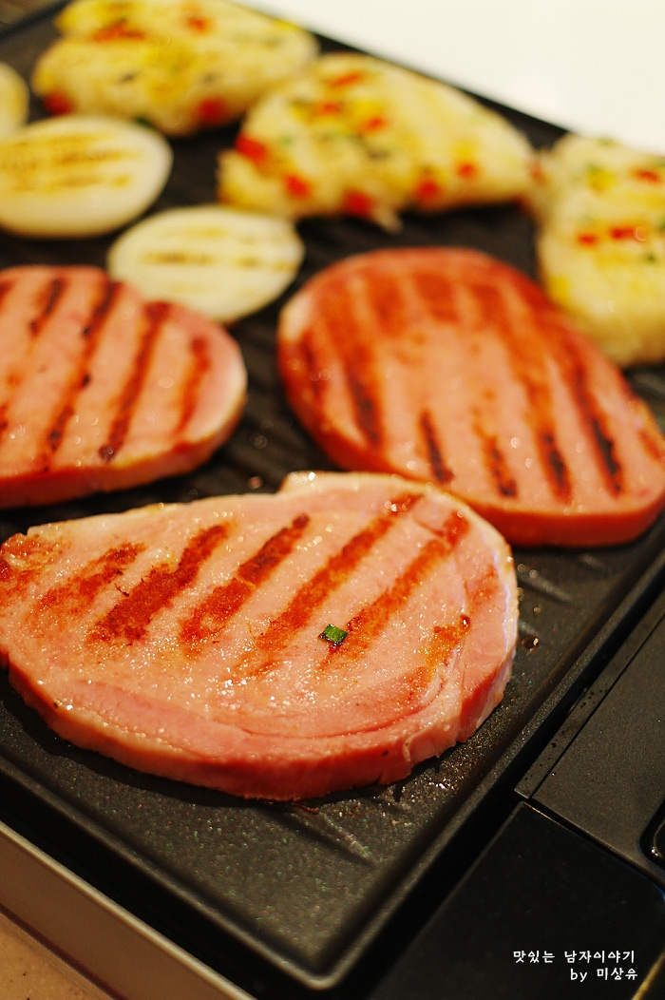

주먹밥과 햄 스테이크 구이
재료 : 햄1장, 양파 1개, 소금, 후추, 식용유 약간
주먹밥 - 밥 1공기, 소금, 후추, 참기름 약간, 파프리카 약간,
미소 된장 약간(생략가능)
스테이크 소스 - 허니 머스터드 2큰술, 씨겨자 2작은술,
레몬즙 3큰술, 설탕 2작은술, 꿀 2작은술, 포도씨유 2큰술
- 햄과 양파는 슬라이스 해서 식용유 살짝 두른 그릴이나 팬에서 소금,후추 살짝 쳐서 잘 구워주세요.
- 주먹밥은 밥에 소금,후추 살짝 치고 파프리카나 넣고 싶은 채소 넣어서 조물조물 모양을 만들어주세요.
- 주먹밥에 참기름이나 미소 된장을 발라 팬이나 그릴에 노릇하게 구우면 완성!
- 소스는 분량의 재료를 잘 섞어주고 스테이크와 양파,주먹밥,샐러드를 접시에 고루 담으면 됩니다.
Tip. 주먹밥에 간 쇠고기를 볶아 넣어줘도 맛이 좋아요.